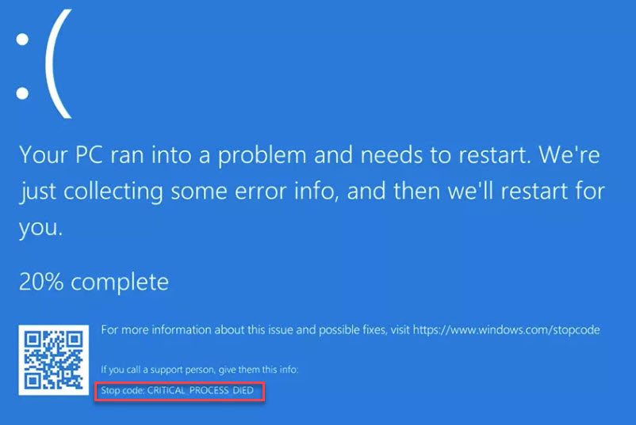
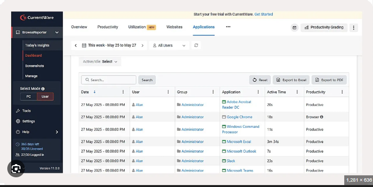
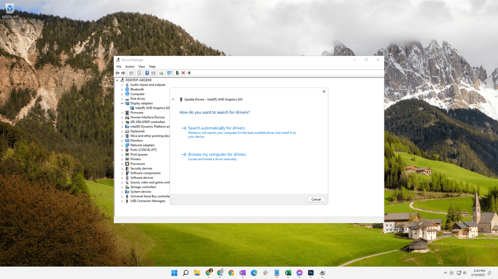
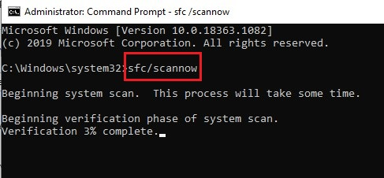
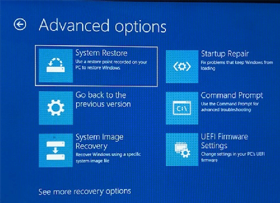

Windows Error Codes & BSOD
Quickly decode Blue Screen errors and system failures.
-
1. Identify the Stop Code
Locate the "Stop Code" at the bottom of the Blue Screen. Common codes include CRITICAL_PROCESS_DIED or MEMORY_MANAGEMENT.

-
2. Analyze Recent Changes
Ask yourself: Did I just install a new app or update a driver? Most errors are triggered by recent software changes or hardware additions.

-
3. Manage Device Drivers
Right-click Start > Device Manager. Look for yellow warning icons on components, then perform updates or rollbacks.

-
4. Run System File Checker (SFC)
Repair corrupted Windows system files. Open Command Prompt (Admin) and type:
sfc /scannow
-
5. Verify Hardware Health
Rule out physical failure. Run a disk check by typing this in Command Prompt (Admin):
chkdsk C: /f /r
-
6. Utilize System Restore
Revert your PC to a stable state without losing personal files by selecting a restore point from before the errors began.

Common Windows Stop Codes
| Stop Code | Meaning | Suggested Fix |
|---|---|---|
| CRITICAL_PROCESS_DIED | Vital system process stopped | Run SFC /scannow |
| MEMORY_MANAGEMENT | RAM hardware or driver issue | Reseat RAM sticks |
| WHEA_UNCORRECTABLE_ERROR | Hardware failure detected | Check CPU/GPU cooling |